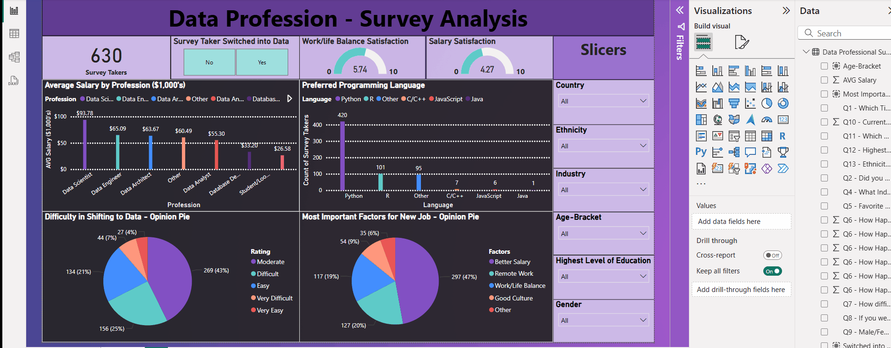
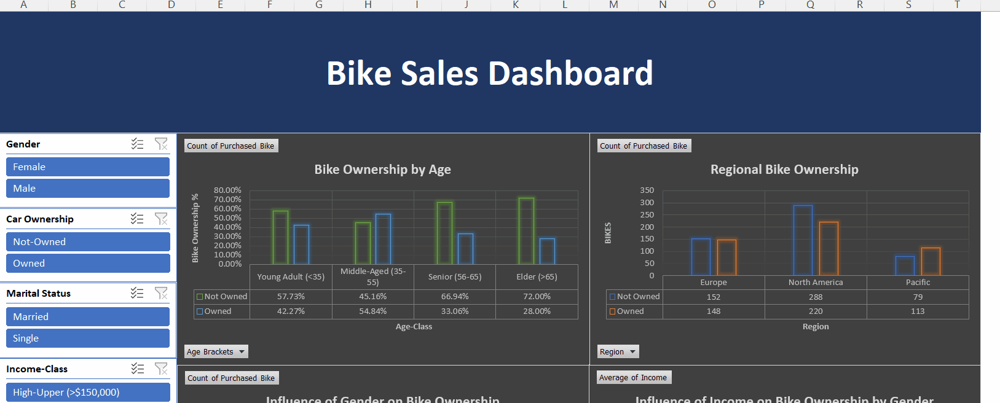
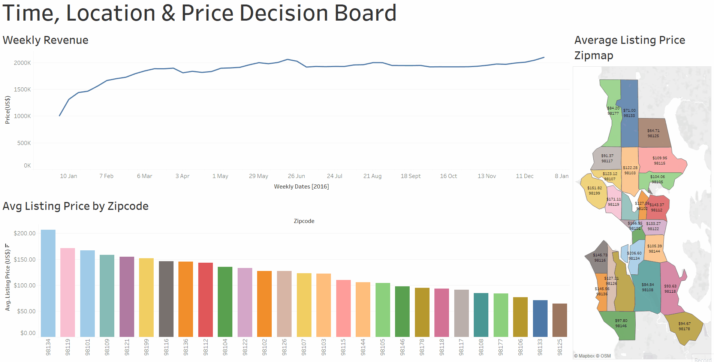
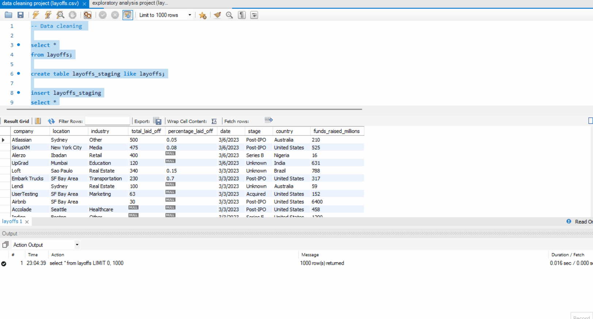

This project presents an interactive Power BI dashboard designed to analyze a survey on data professionals, originally conducted by AlexTheAnalyst. The dashboard provides key insights into various aspects of data careers, from satisfaction levels to career transitions and preferences.

This project features an Excel dashboard designed to help prospective bike shops in the European Union make informed business decisions. Utilizing a comprehensive dataset (which I manually cleaned), the dashboard provides key insights into customer demographics and purchasing behavior across various regions.

This project presents a comprehensive suite of Tableau dashboards designed to empower real estate investors and prospective Airbnb hosts in Seattle. By analyzing key property and listing factors, these dashboards provide actionable insights to inform strategic decisions on which areas to focus on for optimal Airbnb hosting.

My first data cleaning and exploration project in SQL, pertaining to global layoffs among some top MNC's (2020-2023 Dataset).